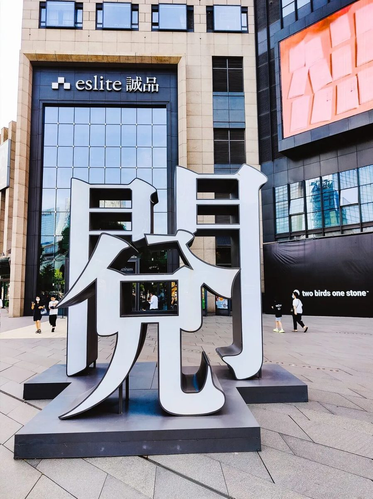
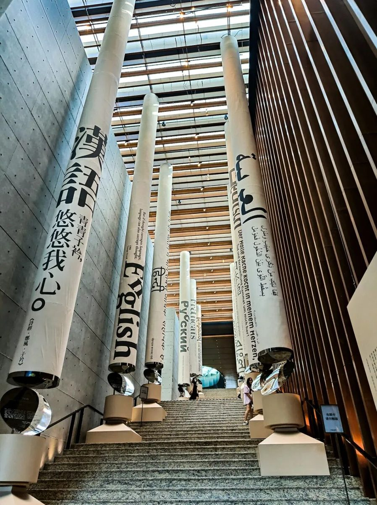
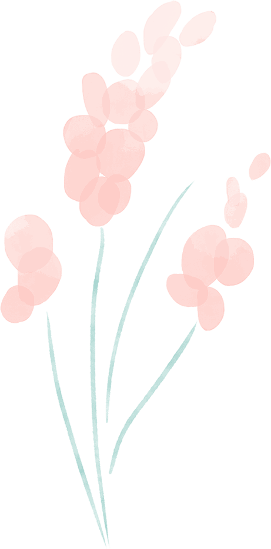
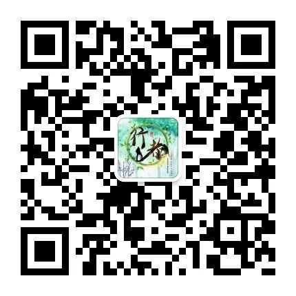

同程行 书店客
-行者无疆 · 流眄苏杭-
美好的时光总是短暂的，
转眼间，
行者们的行程已经到了最后一天。
PART 01
同程行
上午，行者们来到全国知名的同程旅行大厦，在工作人员的带领下开始了对同程旅行大厦的参观。
首先，行者们进入了同程大厦一楼，对同程旅行的公司架构，企业文化进行了初步了解，随后又跟着一组组照片，与同程旅行的创始人吴志祥一同走了一遭同程的发展过程，感受了在那个互联网尚未崛起的年代创业的独特与不易。之后，行者们还上楼参观了同程进行创新的基地，也对与同程的工作人员了解了有关疫情下公司的发展，以及对将来发展的一些问题，同程的参观最终以品尝一顿午餐画上了句号。
PART 02
书店客
当然，行者们的苏州之旅可不会就此结束，行者们在下午来到了苏州诚品书店，在这车水马龙的街道边，霓虹闪耀的灯光下，鳞次栉比的高楼中，难得保有着如此一个令人心灵沉静下来的地方，行者们也用看书来平复着几天旅途的躁动，缓解着旅途的疲惫。



天下无不散的宴席，行者们的行程终于将要结束，但是对于他们来说，旅途只是暂告一段落，并未结束，前方还有众多风景等着探索，旅途无止，行者无疆。
来源 丨 行者无疆实践团
文字 丨 吕 杨
图片 丨 行者无疆实践团
图片 丨 部分来源于网络
排版 丨 徐晓彤
审核 丨 朱华玮 崔雨琪
行者无疆实践团
QQ：2758025831

长按二维码
与行者们一路流眄苏杭！